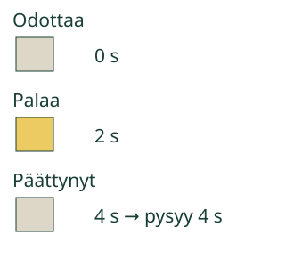

<link rel="stylesheet" href="entry-pilot.css">

<section data-teaching-step="1" data-lesson-role="teaching-step">
<section data-entry-intro><div><h2>Kuinka kauan valo palaa?</h2><p>Loikka mittaa aikaa sekunteina.</p></div></section>
</section>

<nav data-entry-nav aria-label="Oppitunnin kohdat" data-lesson-role="metadata"><a href="#sekunti-tutki">Tutki</a><a href="#sekunti-miksi">Miksi näin?</a><a href="#sekunti-lopuksi">Lopuksi</a></nav>

<section data-teaching-step="2" data-lesson-role="teaching-step">
<section id="sekunti-tutki" data-entry-explore><h3>Käynnistä ja katso</h3>
<p>Sekunti on yhteinen aikamitta. Sen merkki on <strong>s</strong>.</p>
<p>Paina <strong>Toista</strong>. Katso valoa ja sen kelloa.</p>
<div data-seconds-lab data-lesson-context-source="workbench"><p>Ilman liikkuvaa kuvaa: aikuinen käynnistää sekuntikellon käden liikkeen alussa ja pysäyttää sen lopussa. Alla oleva kuva muistuttaa lukemien yhteydestä; se ei korvaa ajan kulumisen katsomista.</p></div>
<details data-lesson-role="teaching-step"><summary>Toiston nopeus ja tauko</summary><p>Toisto käy tavallisella nopeudella: kuvan sekunti kestää noin sekunnin. Voit pysäyttää, toistaa tai siirtyä yhden kuvan sekunnin kerrallaan. Pysäytetty odotus ei lisää kuvan kestoa.</p></details>
</section>
</section>


<section id="sekunti-miksi"><section data-teaching-step="3-1" data-lesson-role="teaching-step"><h2>1. Alusta loppuun, ei koko katseluaika</h2>
<p><strong>Mittaan keston sekunteina.</strong> Sekunti on sovittu aikayksikkö. Sen lyhenne on <strong>s</strong>. Neljä sekuntia kirjoitetaan <strong>4 s</strong>.</p>
<p>Mallissa valo syttyy ja sen kello alkaa nollasta. Valo sammuu ja kello pysähtyy. Lopun lukema kertoo, kuinka monta sekuntia valo paloi.</p>
<p>Valo odottaa ensin. Sitten se palaa 4 s. Lopuksi valo on sammunut ja kello näyttää yhä 4 s. Odotus ennen tai jälkeen ei kuulu palamisaikaan.</p>
<figure data-lesson-role="worked-example"></figure><p>Tutki alla valon syttymistä, sammumista ja sen omaa kelloa.</p>
<details data-lesson-role="worked-example" data-lesson-context="seconds-lamp" data-context-source="workbench" data-context-preset="lamp" data-context-reveal="model"><summary>Tutki valoa ja kelloa tässä</summary><p data-context-fallback>Malli on ilman JavaScriptiä alkuperäisessä kohdassaan: <a href="#sekunti-tutki">avaa mallin kohta</a>.</p><div data-context-slot></div><button type="button" data-context-close hidden>Sulje malli</button></details>
</section>
<section data-teaching-step="3-2" data-lesson-role="teaching-step" data-audience-coupled><h3>2. Sama sekunti molemmille</h3>

<p data-lesson-role="question"><strong>Ennusta:</strong> jos Loikka taputtaa nopeasti ja Aava hitaasti, saavatko he saman määrän taputuksia samassa ajassa?</p>
<p>Tutki alla tapahtuman <strong>Eri rytmit, sama aika</strong> rytmejä.</p>
<details data-lesson-role="answer"><summary>Katso ajatus</summary><p>Taputuksia kertyy eri määrä. Valo palaa silti yhden ja saman 5 s ajan. Oma taputus ei ole kaikille samankestoinen aikamitta.</p><p>Esityksessä nopeaan rytmiin kertyy 10 ja hitaaseen 3 taputusta. Ne eivät tarkoita 10 s ja 3 s. Molemmat tapahtuvat saman viiden sekunnin aikana. Rytmit ovat kuvan laskureita, eivät laitteen kuuntelemia oikeita taputuksia.</p></details><p>Tutki alla tapahtumaa ”Eri rytmit, sama aika”.</p>
<details data-lesson-role="worked-example" data-lesson-context="seconds-rhythm" data-context-source="workbench" data-context-preset="rhythm" data-context-reveal="model"><summary>Tutki rytmejä samassa ajassa</summary><p data-context-fallback>Malli on ilman JavaScriptiä alkuperäisessä kohdassaan: <a href="#sekunti-tutki">avaa mallin kohta</a>.</p><div data-context-slot></div><button type="button" data-context-close hidden>Sulje malli</button></details>
</section>
<section data-teaching-step="3-4" data-lesson-role="teaching-step"><h3>Kokeile uudessa tilanteessa</h3>
<p>Seuraa tapahtumassa <strong>Matka kellon kanssa</strong> liikkuvaa merkkiä lähdöstä loppuun. Lue kulun oma kello. Näkyvän reitin pituutta tai näytön leveyttä ei tarvitse tietää, kun kysytään kestoa.</p>
<details data-lesson-role="teaching-step"><summary>Lisäkokeilu: kaksi omaa kelloa</summary><p>Kokeile myös kahta valoa. Kummankin kello mittaa vain oman valon aikaa. Eri alkuhetkillä yhtä pitkät kestot näkyvät lopuksi samana lukemana.</p></details>
<details data-lesson-role="hint"><summary>Apua</summary><p>Katso vain yhden tapahtuman alkua, loppua ja omaa kelloa. Palaa alkuun ja kokeile yhtä sekuntia kerrallaan. Lopuksi lue numero ja sano tai osoita yksikkö s. Puhetta ei tarvitse vahvistaa laitteella.</p></details>
<details data-lesson-role="teaching-step"><summary>Lisäpohdinta</summary><p>Kaksi liikettä kestää kumpikin 3 s. Toisen jälkeen tehdään heti toinen. Kokeilkaa kellolla: yhteinen kesto on 6 s, jos väliin ei tule odotusta. Pidempiä tapahtumia kuvataan myös minuuteilla ja tunneilla; tässä harjoittelemme sekuntia, emme vielä yksiköiden muunnoksia.</p></details><p>Tutki alla tapahtumaa ”Matka kellon kanssa”. Voit vaihtaa mallin valikosta myös kahteen valoon.</p>
<details data-lesson-role="worked-example" data-lesson-context="seconds-swim" data-context-source="workbench" data-context-preset="swim" data-context-reveal="model"><summary>Tutki matkan kestoa tässä</summary><p data-context-fallback>Malli on ilman JavaScriptiä alkuperäisessä kohdassaan: <a href="#sekunti-tutki">avaa mallin kohta</a>.</p><div data-context-slot></div><button type="button" data-context-close hidden>Sulje malli</button></details>
</section></section>

<details data-lesson-role="teacher-note"><summary>Opettajalle ja ilman ruutua</summary><p>Vuosiluokat1–2. Vaadittu esitieto on keston laadullinen vertailu M-TIME-01. Mallinnamme nollasta alkavan keston ja sovitun yksikön; emme vaadi kellotaulun lukua tai nopeuden laskua. Valmis lukema on mallin lukemista, ei näyttö oppijan itsenäisestä mittausmenetelmästä. Numerot ja symbolit tukevat aikuisen lukemaa lyhyttä ohjetta.</p><p>Esitys ei ala itsestään. Toista käyttää todellista kulunutta toistoaikaa, tauko pysäyttää sekä tapahtuman että kellon; askel on tarkalleen yksi mallisekunti ilman oikeaa odotusta. Sekuntilukema näyttää täyttyneet kokonaiset sekunnit. Kellon lähtö/loppu on sidottu omaan tapahtumaan. Sovittu simulaatioaika ei ole kalibroidun mittalaitteen sertifiointi.</p><p>Ruutu ei tunnista taputuksia. Kokeilkaa aikuisen kanssa kahta omaa rytmiä ja samaa kellolla mitattua aikaa. Älkää päätelkö taputusten määristä kestoa ilman rytmin määrittelyä. Ulkona voi ajoittaa rauhallisen kävelyn; ei kilpailua tai nopeusvaatimusta. Tässä ei arvioida oikean välineen käsittelyä, itsenäistä tai säilyvää hallintaa eikä tallenneta oppimishistoriaa.</p></details>

<section data-teaching-step="4" data-lesson-role="teaching-step">
<p id="sekunti-lopuksi" data-lesson-role="question"><strong>Lopuksi:</strong> miksi sama sekunti on hyödyllisempi yhteinen aikamitta kuin jokaisen oma taputus?</p>
</section>

